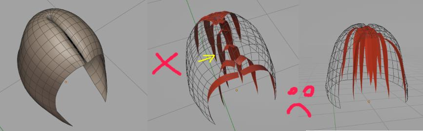

Hair System¶
Overview¶
 Three main building-blocks of hair in Hair Tool: Setup, Hair (sub)Systems, Profile
Three main building-blocks of hair in Hair Tool: Setup, Hair (sub)Systems, Profile
In Hair Tool there is concept of: Hair System - it is Blender geometry-nodes based modifier where hair strands are generated and modified. Modifications are done by adding sub-nodes (here called Deformers) to these modifiers (Hair Systems).
Hair-cards, in Hair Tool, are build from three basic modifiers (some are optional):
- Setup modifier that connects: guide curve and source mesh
- Hair Systems These are like the building blocks of the hair. They use generators to create strands and deformers to shape them,
- Hair Profile modifier where geometry, UVs, and materials are attached to strands,
Multiple Hair (sub)Systems, can be connected together using labels called Tags. This helps to set child-parent like relation, which is needed, for: hair interpolation, clumping and other effects.
Hair System panel is located in Right Sidebar > Hair Tool Tab > Hair System Panel.
Click [+] to add Hair System to selected mesh (or curve) object.
 Example of two Hair Systems setup:
Example of two Hair Systems setup: Parent and Child. Child System is made from: Strand Generator, Noise, Clump, Set Radius etc. deformers. Parent system is guided by: HairCurve guide (second input at very top)
Sub-Systems Types¶
After adding a hair (sub)system, the first slot in the deformers stack is automatically added, with its type determined by the selected hair sub-system type.
Strands Generator¶
It will grow strands, from Base Mesh surface. You can control parameters like: resolution, density, length, interpolation (Parent Child relation must be set) etc. These strands are affected by all subsequent deformers in current system stack
Set parent Tags and enable interplation option, so that generated strands will follow these Tagged strands. See Child Parent Setup
Strands Distribution¶
Poisson distribution is a better way to spread things out evenly than just randomly placing them.
Here's why:
Imagine you're trying to place hair strands on a surface.
-
Random placement: You might end up with clumps of hair in some areas and gaps in others.
-
Poisson distribution: This method makes sure the hair is spread out more evenly. It does this by removing any hair strands that are too close together.
 Left: notice the clumping of hair roots;
Left: notice the clumping of hair roots;
Center: Poisson distribution fixes clumps issue, by removing roots (marked in black) that are closer than Min Distance parameter.
Right: Increase Density parameter to fill up the empty spots
Relax Distribution¶
Relax option - useful when you masked Density input - e.g. with vertex group (masking Density results in non uniform strands distribution)
Strands Filter¶
Imagine you want to modify multiple Hair Systems, by adding Set Radius or Align Tilt. Instead of adding these deformers to each individual Hair subSystem, one by one, you can utilize the Filter System to affect all previously generated strands simultaneously. All type of strands can be modified:
- 'real' strands (for example generated with Hair Drawing),
- or generated procedurally by another Hair subSystem e.g. Strands Generator.
Note: If no filter tag is specified, then all strands will be affected. Otherwise only strands with specified tag will be affected.
Demo of applying 'Scale' deformer to strands generated with Right and 'Left' Hair Systems. When no filter Tag is set, then all strands are scaled
Strands From Grid Surface¶
This type of Strand Generator, will guide strands using guide mesh (grid mesh, made of quads only). Root of strands will be placed:
- on edge loop marked as Sharp (Ctrl+E -> Mark Sharp)
- or on crease edge (Shift+E -> Crease Edge).
These strands can be affected by all subsequent deformers in current system stack
In video above - top, boundary edge loop was marked as sharp
Note: Notice how guide grid, in video above, has uneven topology - getting dense to the right. This is important when adjusting 'Uniform Spacing' option
Note: To mask-out placement of roots, just plugin in vertex group mask into 'Placement Mask' input
Examples of proper grid guide topology:
 Check out the FAQ to see examples of wrong mesh topology
Check out the FAQ to see examples of wrong mesh topology
Interpolated Strands¶
This Strand Generator, will use existing curves add extra strands in between them. In that case order of strand matter!
In video above I used drawn strands to guide the 'Interpolated Strands' generator (video is narrated)
Note: If order of your strands is wrong, and Automatic Spline Sorting option fails, you can use Sort Strands by Stroke operator to manually fix the order (see video above)
Strands from Prism Mesh Guide¶
It will allow you to generate strands on base mesh along 'walls' of prism like mesh. Bottom face has to be separated from 'wall' using sharp edge (see video below)
In this example I had marked sharp edges to create face groups/islands (no edge split modifier was used though). Then I extruded these edges, to create valid mesh for 'Strands from Prism Mesh Guide' generator
Note1: Extruding faces, in the way that was done in video above, creates non-manifold mesh, and the resulting prism 'Wall' faces normal's will be messed up (some face out, some in). You can unify them using: Ctrl+N > Recalculate Normal's operator.
Note2: You can use Ctrl+Shift+H >
Strands from Prism Meshoperator to: create new (separated) hair object and switch your base mesh display mode to 'WIRE' automatically. This will help you to see both hair-cards and base (prism guide) mesh at the same time.
Strands on Mesh Parts¶
It will allow you to generate strands on base mesh: vertices, edges and (or) faces.
When used on edges it looks similar to Short Hair. Especially if you combine it with Track to Mesh deformer
Strands on Mesh Border¶
It will allow you to generate strands on base mesh border edges (or on custom edge attribute)
In video above we combine this strand generator with Track To Curve deformer. Scalp mesh is using Mirror modifier - that is why the strands are also spawned on center line
Border Offset move strands away from the border edge. You can randomize it to get more natural hairline look
Trim Ends - use to prevent strands spawning on the border edges endings - see 'Split Corner Angle' parameter below
Split Corner Angle - scalp from video above has some sharp corners. This parameter will help to split these corners into two edges, so that you can trim them with 'Trim Ends' parameter.
UVs - Strands on Mesh Border generator requires non-overlapping UV's on your base mesh, to function properly.
Transfer Hair System¶
Hair System can be assigned to Mesh or Curve Hair object, depending on which object is selected when you add Hair System. If you want to change Hair System 'owner' you can use Transfer Hair System operator.

Hair System that generates hair-cards (in center above) can be assigned to:
Source/Base Mesh mesh from which strands are spawned from (often scalp mesh)
Empty Mesh helper, without geometry, usually linked with Source Mesh and Guide Curve
Guide Curve curve object that guides strands
Empty Curve helper, without geometry, (usually linked with Source Mesh and Guide Curve)
Hair system transfer possibilities:
| Current Owner | Transfer To | Result |
|---|---|---|
| Guide Curve | Base Mesh | Hair System will be moved to Base Mesh Surface (usually scalp) |
| Guide Curve | Empty Mesh | Hair System will be moved to new, empty mesh object |
| Empty Curve | Base Mesh | Hair System will be moved to Base Mesh Surface (usually scalp) |
| Base Mesh | Guide Curve | Hair System will be moved to Guide Curve |
| Base Mesh | Empty Curve | Hair System will be moved to Empty Curve Hair object |
| Base Mesh | Empty Mesh | Hair System will be moved to Empty Mesh object |
| Empty Mesh | Guide Curve | Hair System will be moved to Guide Curve |
| Empty Mesh | Base Mesh | Hair System will be moved to Base Mesh |
Visually, there should not be any noticeable difference. However, the owner of the Hair System will change
User cases when you want to use Transfer Hair System:
- if you want to 'Bake' curves generated by Hair System to curve, but it is assigned to Mesh (meshes cannot receive curves geometry). In that case you can transfer Hair System to Empty Curve, and then bake it to it
- if hair interpolation is broken (e.g. stops working after you select and try to sculpt Guide Curve. See note in Hair Interpolation section
General Operations¶
- Remove whole Hair System - removes all Hair Systems, Setup and Profile modifiers from object
- Update Whole Hair System - updates Setup, Profile, Hair SubSystems (without deformers) nodes. All nodes are recreated from scratch, it is destructive operation and may break your Hair setup!
- Bake All SubSystems - bake curves generated by All Hair sub-Systems into 'real' curves geometry. This works only on hair curve type of objects (try: Ctr+Shift+H > Transfer Hair System: to Empty Curve, or to Guide Curve)
- Transfer Hair System - explained here
Child - Parent setup¶
Linking two Hair SubSystems, with Child-Parent relation, enables capabilities such as: interpolation, clumping, curls, braids, twist and others.
Use Tags to link two Hair SubSystems, establishing a parent-child relationship.
In the video above, I show how to make the red strands (called "ParentSys") the parent (guide) for the yellow strands (named "Child"). You can use any tag name you want. In this example, I used "RED".
Note: Parent Hair System has to be placed above Child System in the stack, or else Child strands won't 'see' the Parent strands
Hair Interpolation¶
To use hair interpolation, your hair system needs a parent set up.
You'll see the 'Use Interpolation' button appear in the settings for the first hair deformer - Strands Generator.
Align to Surface Normal¶
Align to Surface Normal - useful for shorter hair. Do not confuse with Align Tilt To Source Surface
Use mesh Islands Splits¶
The Use Mesh Islands Splits option restricts child strands to follow only parent strands from the same mesh island. This feature is particularly useful for creating split hairstyles. To create a split, select an edge loop that divides the scalp in half and press 'V' to rip it. Once split, child strands will remain confined to their respective mesh islands and won't cross the divided edge.
Note: instead of splitting the edges physically, you can use the Edges split modifier
In video above I have cut mesh in 4 parts (visualised with 4 colors). Strands won't cross islands boundaries
Note: For hairstyle with split, I recommend using Select By Island so that you can one click select all strands from particular island.
Fixing Interpolation (1)¶
In some cases interpolation may not work (interpolation breaks when you select Guide Curve). It can be caused by cyclic dependency:
- Guide curve depends on your base mesh (scalp) - from which it is generated from,
- Base Mesh may depend on 'Guide Curve' - through attached Hair System and enabled interpolation to Guide Curve
The fix is: break the cyclic dependency using Transfer Hair System and move Hair System to either Empty Mesh or Guide Curve.
Fixing Interpolation (2)¶
 Strands do not go to left/right and instead fall in the middle
 The reason: imagine new strand (marked with green X above) follows two nearest purple guides. It is causing the strand to go to the center (average of both guides)
The reason: imagine new strand (marked with green X above) follows two nearest purple guides. It is causing the strand to go to the center (average of both guides)
 The fix: split base mesh into two islands (marked with black and white) and enable Use mesh Islands Splits option. Now new strand will follow guides from one side (white or black) - resulting in clean interpolation on right
The fix: split base mesh into two islands (marked with black and white) and enable Use mesh Islands Splits option. Now new strand will follow guides from one side (white or black) - resulting in clean interpolation on right
Hair sub-System menu¶
You can copy settings from any hair system, and paste to target using entries above.
Bake¶
Procedurally generated strands cannot be groomed. First convert them into 'real' geometry with 'Bake' operator. This will bake: active (and preceding) Hair sub-Systems or All Hair sub-systems into 'real' curve geometry, that can then be groomed using Blender 'Curve Sculpt' mode.
Note: Baking works only if Hair System is attached to hair curve type of objects! If not the use: Ctr+Shift+H > Transfer Hair System > to Empty Curve or to Guide Curve)
Curves in video cannot be groomed, since they are generated procedurally. After baking, you can groom them without issues
Update Node Pack¶
Update selected Hair Components (geometry node setup) to its latest version, for example after updating add-on
Copy/Paste Hair System¶
Copy Hair System settings from: Active Hair sub-System or All sub-Systems
Paste Hair System settings to: Active Hair sub-System or to All sub-Systems
Copying All SubSystems (and profile settings) from one object to another. Receiving object has to have at least one Hair subSystem attached. Also make sure both objects share same vertex groups, similar sharp (or crease) edges - if you copy Curves From Grid type of setup
Switch Hair System Type¶
Note: Since release of Hair Tool 4.2 this option is moved to first deformer (strands generator) dropdown menu.
Switch Hair System Type - for example from Strands Generator to Strands Filter.
Pasting Hair System settings (or instancing object that uses Hair System), will create linked copy. This means that change performed on new copy, will affect original Hair subSystem too. Number of Hair System users is displayed next to Hair Tag (green box in image above)
Note: You can unlink Hair System, by clicking on 'users number' (see green box above)
Tags¶
Think of Tags as labels we apply to the strands in a Hair System. They enable us to establish child-parent relations or manipulate specific strands with strands filter. Why won't we use system name for that functionality? The reason is, that you can assign multiple tags to same strand e.g.:
- Hair System A strands Tags:
LONGandCURLY. - Hair System B strands Tags:
LONG
Now you can modify strands tagged with LONG label - using Strands Filter, without having to create same deformers on Hair System A then B twice.
Tags can be also assigned to subset of strands from within Hair System with Assign Tag deformer.
In image above we tagged 'First' Hair System A with label. 'Second' and 'Third' system are linked to it - which allows us to use e.g. interpolation on them. Note: Guide curves received GUIDE tag automatically
Tag can be assigned in few ways:
- by typing it in next to system name see
Atag in image above. If system has no tag assigned then[TAG]label is shown - by using Assign Tag deformer
- you can also assign tags to Hair System guide object (new Curve Hair) using Tags Panel. See Below
Tags Panel¶
In video above we create Tag A, then assign selected curves to tag A using Assign button
Note: Assigning Tags only works on new Hair Curves. To be able to select individual curves, like in video above, you have to use Hair Modeling mode. For now only selection works from all the available Modeling Tools
Updating¶
After updating Hair Tool add-on, you may need to update your Hair Setup:
- There is option to update Individual Hair System elements (Deformers, Masks, Profiles etc.) - located in Deformers dropdown menu
- Setup and Profile node (green and blue box on image below)
- Update Whole Hair System located in General Menu - this will update all nodes, in all Hair Systems for all objects on scene. Be warned though: add-on will try to recreate whole node tree structure from scratch, so this may now always work.
 You may update deformer, profile, mask etc. nodes using menu above
You may update deformer, profile, mask etc. nodes using menu above
Note:: Using individual node packs update (only Deformers, or only Masks etc.) method is usually safer.
Limitations¶
Only One UV box can be assigned to profile - you can use Mesh Profile with multiple meshes as a workaround for randomizing UVs(No longer the case Since HT 2.44)- Hair Modeling Tools do not work (except selection)
Hair interpolation is using booleans under the hood. Because of this, interpolation may fail if boolean fails. And Interpolation may be slow on heavy base meshes (I recommend using lowpoly hair surface meshes). Hopefully I will find better way in the future, to create interpolations.(No longer the case since Blender 3.5 and Hair Tool 2.44)
FAQ¶
I get Errors in console¶
If you open old blend file with old Hair Tool setup, after you updated Hair Tool, you may get some errors, and UI wont be drawn correctly. Use Update Whole Hair System located in General Menu - this will update all nodes, in all Hair Systems for all objects on scene
Warning this is potentially destructive operation, since whole node tree will be recreated from scratch. Updated nodes behavior may change, resulting in slightly different hair look
Hair Interpolation won't work¶
In some cases interpolation may behave erratically (e.g interpolation breaks when you select Guide Curve). The most likely cause is - cyclic dependency between Base Mesh with attached Hair System and Guide Curve.
See note in Hair Interpolation section.
To fix the cyclic dependency use Transfer Hair System and move Hair System to either: Empty Mesh or Guide Curve.